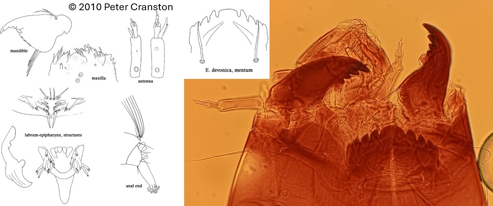

Eukiefferiella type devonica (Edwards, 1929)

Antennes
Antenne avec 4 ou 5 segments (généralement); segment 4 plus long ou subégal en longueur au segment 3. Lame plus courte que flagelle. Organes Lauterborn petits jusqu'à long le segment 3. Style bien développé, généralement aussi long que le segment 3.
Mandibules
Dent apicale beaucoup plus courte ou de même taille que la largeur combinée des dents internes.
Mentum
1 dent médiane large et 4 paires de dents latérales présentes.
Labre
SI & SII simples. Peigne de l’épipharynx constitué de 3 écailles courtes.
Prémandibules
Prémandibules souvent larges et simples
Ecologie
Ce genre est rencontrée principalement dans les cours d’eau turbulent.